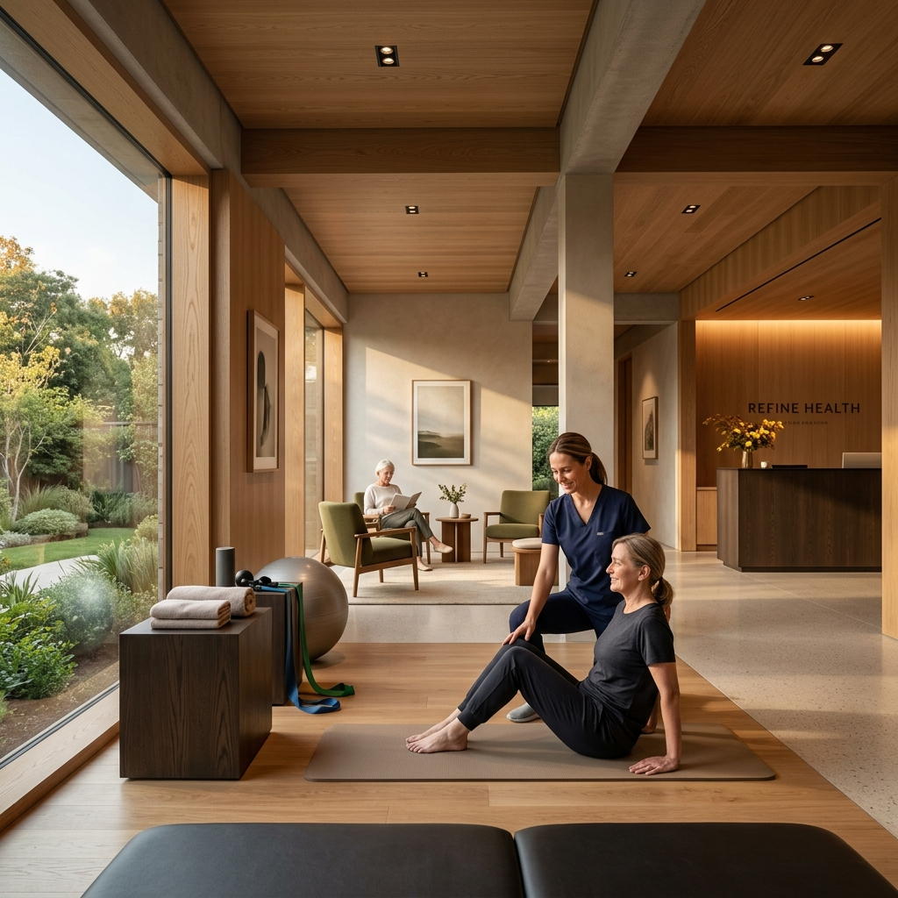
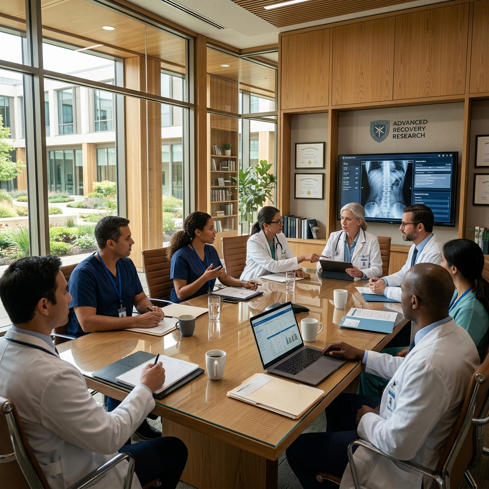
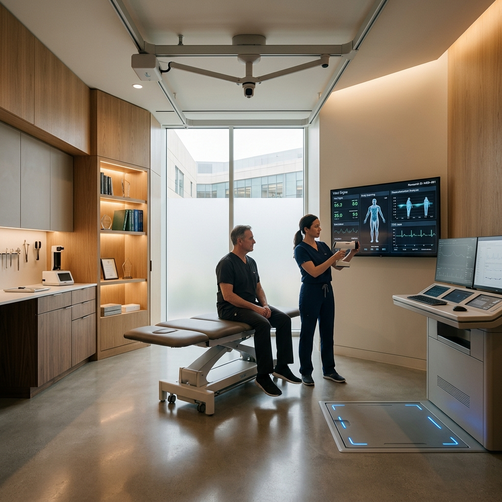

ONCORE ACTIVE
During treatment
Programmes adapted for people in active treatment: supervised clinical exercise to reduce fatigue, preserve muscle mass, and improve treatment tolerance.
Learn morePortugal's first private Cancer Recovery & Survivorship Center. A place where science, movement and human care come together to restore strength, confidence and autonomy.
From treatment
back to life.
A continuous clinical journey, with a close-knit team and a plan that evolves with you at every stage.
Whether you are undergoing treatment or finished months or years ago, we are by your side at every stage, providing specialized guidance, close support, and compassionate care that restores strength, confidence, and autonomy.
Miraflores, Área Metropolitana de Lisboa

«Cancer has changed. Survival has increased.
But surviving is not the same as recovering.»
We believe that the success of treatment does not end with disease remission. ONCORE does not replace the hospital: it ensures continuity of care through integrated and multidisciplinary programmes, restoring your autonomy and confidence.
We do not treat cancer. We help people recover from it, using science, technology, and deeply humanized care.
Discover ONCOREDuring treatment
Programmes adapted for people in active treatment: supervised clinical exercise to reduce fatigue, preserve muscle mass, and improve treatment tolerance.
Learn morePost-treatment
Intensive post-treatment programme, focused on restoring strength, reducing fatigue, and regaining functional capacity and quality of life.
Learn moreMaintenance & Membership
Maintenance and membership programme for long-term survivors: supervised training, periodic reassessments, clinical follow-up, and the ONCORE community.
Learn moreRemote monitoring, telemonitoring, and mobile app – your clinical team, wherever you are. Exercise plan, clinical progress, and secure communication in the palm of your hand.
Learn moreSpecific programmes:
ONCORE LYMPH · lymphedema prevention and treatment ONCORE RETURN · professional reintegration and return to workA dedicated Case Manager coordinates your entire journey, appointments, team, and follow-up.
Speak to a Case ManagerComprehensive multidisciplinary assessment: clinical, physical, nutritional, and psychological; for risk stratification and the definition of individualized goals.
Coordinated intervention of Clinical Exercise, Oncology Physiotherapy, Nutrition, and Psycho-oncology in a single goal-oriented plan.
Periodic reassessments focused on functional and quality-of-life indicators, with continuous adjustment of the plan to your progress.
Science and humanization in a coordinated team that places each patient at the center of all clinical decisions.
Founder, CEO & Clinical Exercise Specialist
Pioneering vision in oncology recovery in Portugal, prescribing exercise according to ACSM, ASCO, and ESMO guidelines.
Physiatrists and Oncologists
Scientific supervision, risk stratification, and continuous articulation with hospitals and referring physicians.
Oncology Physiotherapists, Nutritionists, and Psycho-oncologists
Integrated intervention with weekly clinical meetings and shared therapeutic plans, centered on the person.
Trust our specialists for your patients' recovery. A simple referral process with continuous clinical communication.
Refer a Patient / PartnersComplementary care to hospital treatment; we do not replace the hospital, we complete the recovery journey.
Objective clinical reports based on Value-Based Healthcare principles: function, fatigue, quality of life, and return to work.
Digital platform for referring physicians, with access to patient progress, clinical indicators, and discharge reports.
Illustrative testimonials, representing the expected results of the ONCORE programmes.
Book your initial assessment or speak to a Case Manager. We are here to guide you from the first contact.
Agendar Avaliação8h00 – 20h00
Miraflores, Oeiras. Área Metropolitana de Lisboa
If you can't find the answer you're looking for, talk to us.
Yes. We are establishing agreements and protocols with the main insurance companies and health subsystems, including recovery packages, post-surgical programmes, and digital monitoring, with outcome evaluations based on clinical indicators.
It is not mandatory. We accept referrals from oncologists, physiatrists, family doctors, hospitals, and insurers, but you can also start your journey on your own initiative. In any case, we always coordinate with your primary medical team.
It is an integrated and multidisciplinary analysis: clinical history, body composition, muscle strength, cardiorespiratory capacity, mobility, fatigue, nutritional status, and emotional health. Based on the results, we set goals and build your personalized plan.
Yes. The ONCORE ACTIVE programme is designed for people undergoing active treatment, featuring reinforced clinical supervision and continuous communication with your medical team to safely reduce fatigue and preserve functional capacity.
We are located in Miraflores (Oeiras), in the Lisbon Metropolitan Area, in a premium non-hospital environment equipped with a clinical gym, physiotherapy and consultation rooms, and universal accessibility.
Monday to Friday, from 8:00 AM to 8:00 PM. Programmes with a digital component include continuous remote monitoring through the ONCORE mobile app.
An integrated platform for recovery, training, and research.

Certified training in Cancer Exercise, Rehabilitation & Survivorship for health and exercise professionals.
Learn more
Production of science, Artificial Intelligence, and Real-World Evidence applied to oncology recovery.
Learn more